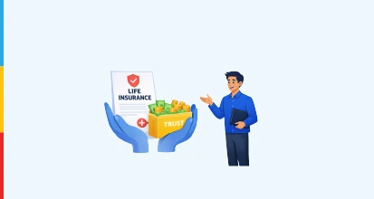
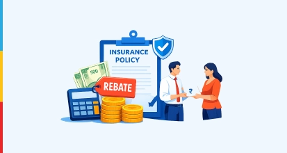
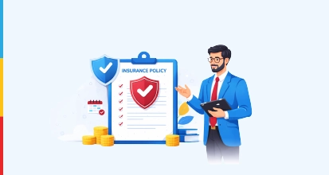
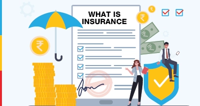
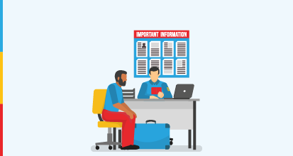
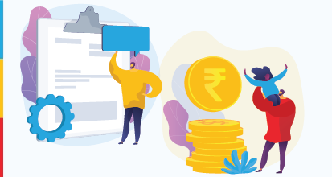
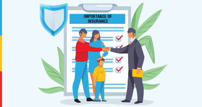

Life Insurance Blogs
Discover a wealth of knowledge in our life insurance blogs, where expert tips and clear explanations help you choose the best coverage for your needs.
Browse article by category
All About Life Insurance: Canara HSBC Life Insurance Blog

What is a Trust in Life Insurance? Complete Guide
Learn what a trust in life insurance is, how it works, and how it provides tax savings, faster claim payouts, and financial protection for beneficiaries.
Which Government Life Insurance Schemes are Best in India?
Explore government life insurance schemes in India, their benefits, eligibility, premiums, and how they secure financial protection for families.
What is Keyman Insurance? Meaning & Benefits
What is Keyman Insurance? Learn how it works and why businesses use it to protect against financial loss from losing key employees.

What is Conditional Assignment in Insurance Policy?
Understand conditional assignment in insurance, including its meaning, benefits, examples, and when it becomes effective.

What is a Rebate in Insurance and How Does It Work?
Learn what a rebate in insurance means, how it works, and the rules you should know before buying an insurance policy.

What Is an In-Force Policy in Insurance and Why It Matters?
Learn what an in-force policy in insurance means, how it works and why maintaining an active policy is important for financial protection.
Editor's Choice
7 Principles of Insurance in India Every Policyholder Should Know
Explore the seven fundamental insurance principles including utmost good faith and indemnity that govern policies and claims.

What is Insurance? Definition, Types and Benefits
Insurance is a contract between an insurance company and an individual/business that helps the latter to receive financial compensation from the insurance company against the loss.

Premium Payment Options in Life Insurance & Its Benefits
Explore the flexible premium payment structures and methods offered by Canara HSBC Life Insurance to suit every lifestyle and financial plan.

Surrender Value of Life Insurance: How to Calculate It?
Learn how to calculate the surrender value of a life insurance policy, understand surrender factors, and know how policy value changes over time in India.

Importance of Insurance: Types, Benefits & Purpose
Insurance benefits people who are looking to protect their loved ones or property from any financial losses. Read this blog to understand the importance of insurance.
Frequently Asked Questions
As the name suggests, whole life insurance is a type of life insurance in which the insured is protected for their entire life. Generally, the plans offer coverage up to 99 years of age.
Everyone should buy life insurance as it financially protects their loved ones and dependents in case of their unfortunate demise. It acts as an income replacement.
Surrender value refers to the amount that the life insurance company has to pay when a policyholder wishes to surrender the policy in between the policy tenure.
Life insurance offers the policy nominees a sum assured if the policyholder dies, provided the premiums are paid on time, and the policy is active.
Every person has varied needs and wants. The best life insurance offers plans to provide financial security according to these needs and wants.